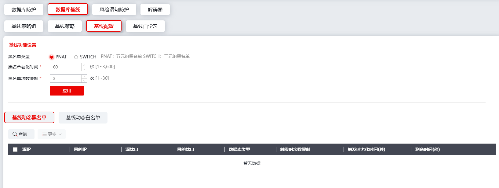

基线配置模块可供管理员进行基线基本功能的设置以及动态黑名单/白名单的信息查看。
选择 ，激活“数据库基线”下的“基线配置”页签，界面如下图所示。

界面上方为基线功能设置模块，管理员可以在此处配置基线黑名单的基础信息，相关参数的具体信息如下表所示。
参数 |
说明 |
|---|---|
黑名单类型 |
选择黑名单类型，可选项：PNAT/SWITCH。 说明： PNAT：五元组黑名单； SWITCH：三元组黑名单。 |
黑名单老化时间 |
设置黑名单项的老化时间，超出老化时间的黑名单项会被自动删除。 |
黑名单次数限制 |
配置黑名单次数限制，取值范围：1-30次。 说明： 此处配置的是动态黑名单阈值，即：若一条动作为“阻断”的策略被触发的次数超过此处的限制，那么对应的源/目的IP等五元组或三元组信息将被自动添加进动态黑名单。 |
配置完成后，点击【应用】保存黑名单基础配置。
界面下方为基线动态黑名单/白名单查看区域，管理员可以在此处查看NGFW根据基线策略组处已有配置而生成的动态黑名单/白名单项。